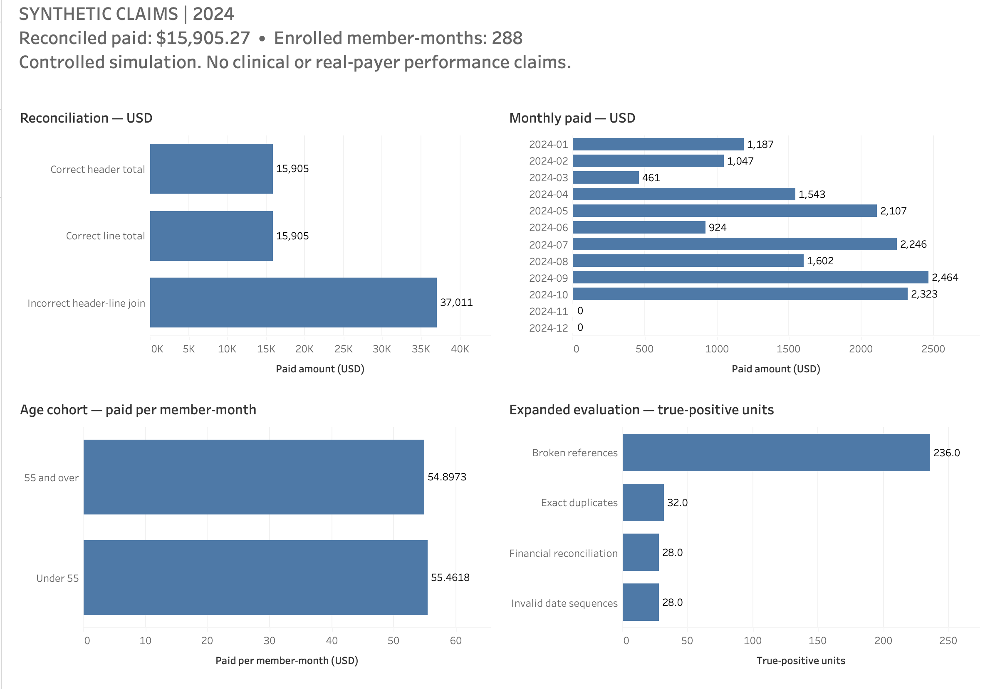

Claims analysis · SQL · Python · Tableau
Claims Quality & Reconciliation
Claim-header payments summed after the join to service lines overstated the synthetic paid total by 132.7%, because each payment got counted once per line. SQL and Python checks here catch that error and three other common problems in claims data.
Explore the controlled exampleProblem
Claims data comes in two levels: the claim header holds the payment, and the service lines sit under it. Join them and the header payment repeats on every line. Sum that column and the paid total comes out too high, yet still believable enough to end up in a report. Claim counts inflate the same way. Duplicate records, orphaned rows and dates out of order cause the same kind of quiet error.
What I did
Wrote SQL and Python checks for four problems: duplicate records, broken links between tables, dates in the wrong order, and totals that don't reconcile. To test them, planted known defects in copies of a small synthetic claims dataset, along with valid records made to look like defects, then compared what the checks flagged with what was planted. The expanded suite ran 18 scenarios on 4 generated datasets each, 72 runs in all.
Once the data checked out clean, built the utilization analysis and a Tableau dashboard on it.
Result
The incorrect join overstated the synthetic paid total by 132.7%. Header payments, summed line payments and a join with one row per claim all give the same reconciled total.
Every check caught all of its planted defects, with no false alarms.
| Check | Correctly flagged | False alarms | Misses |
|---|---|---|---|
| Exact duplicates | 32 | 0 | 0 |
| Broken links between tables | 236 | 0 | 0 |
| Invalid date sequences | 28 | 0 | 0 |
| Payment reconciliation | 28 | 0 | 0 |
Dashboard


Limitations
All claims are synthetic. No patient, payer or employer data is used. Results on these generated cases do not estimate performance on real claims. Cohort differences and the months with zero claims come from the way the data was generated.